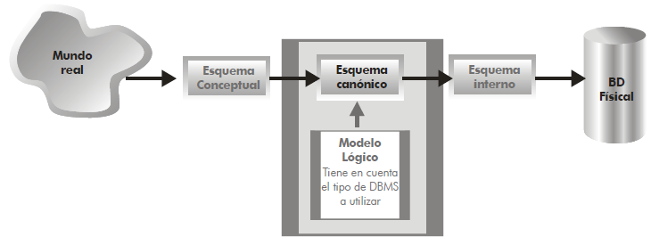
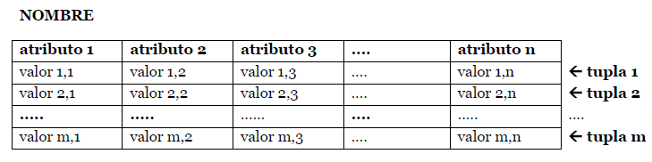
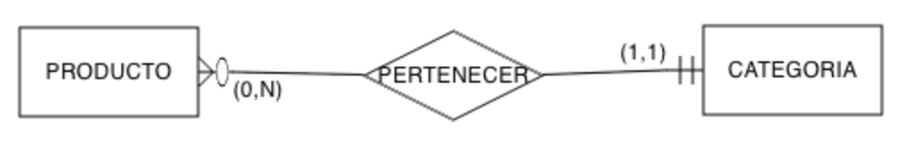
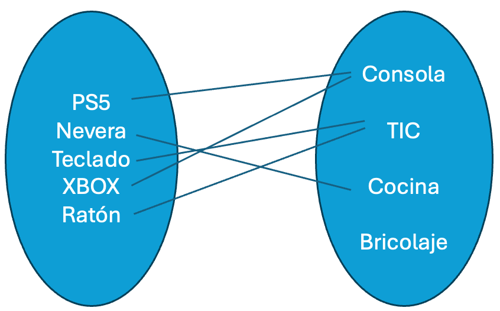
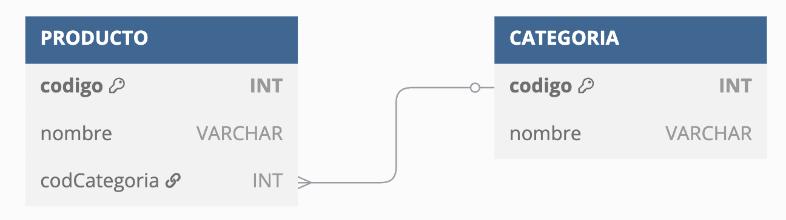
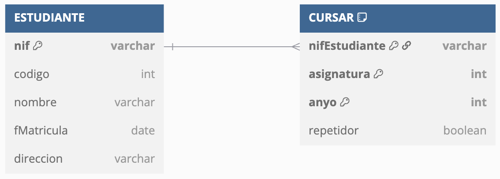
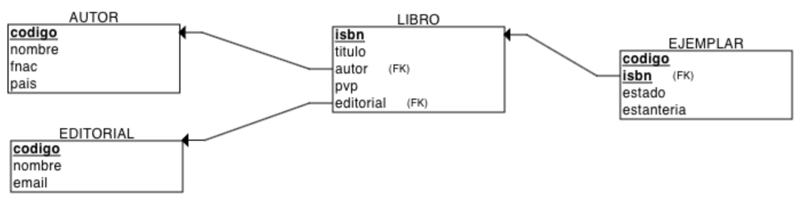
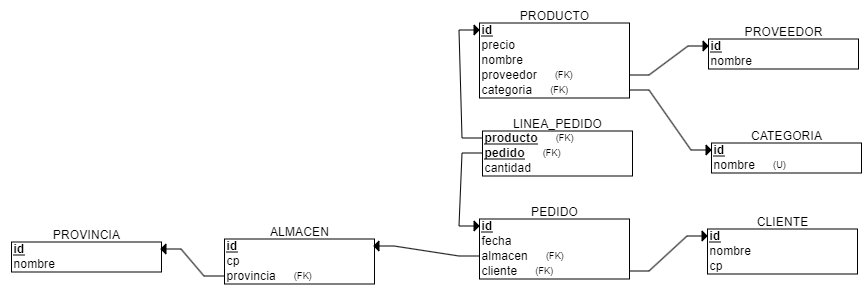
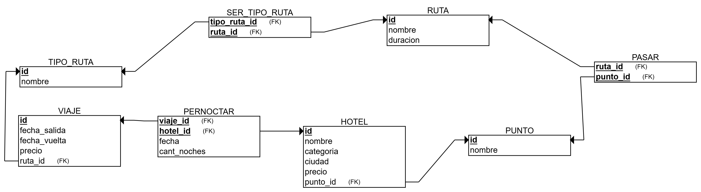

Esta unidad es la tercera, con lo que se imparte en la primera
evaluación, durante la segunda quincena de octubre, con una
duración estimada de 9 sesiones lectivas:
En la
unidad anterior
estudiamos que un
modelo lógico representa de forma
conceptual la estructura de una base de datos, pero dependiendo
del SGBD a
utilizar.

Modelo lógico
Si nuestra elección es un
SGBD
relacional, el modelo por excelencia es el
modelo relacional. Creado por Codd a
finales de los años 60, aunque los primeros
SGBD
relacionales no aparecieron hasta los 80. Una base de datos
modelada mediante el modelo relacional se conoce como una base
de datos relacional.
Supuso una revolución en el diseño lógico de las base de datos,
dando lugar a la segunda generación de
SGBD.
Es el modelo lógico más extendido, y por ende, el
mercado de
SGBD está
copado de soluciones relacionales como Oracle,
PostgreSQL, MySQL, SQL Server, etc...
Los objetivos del modelo relacional son:
Independencia física
La forma de almacenar los datos no debe influir en su
manipulación lógica
Independencia lógica
Las aplicaciones que usan el
SGBD
no deben sufrir una modificación cuando se modifique una
base de datos.
El elemento principal es la relación, que
consiste en una tabla que contiene filas y columnas. Una base de
datos relacional consiste en un conjunto de tablas relacionadas
donde cada tabla tiene un nombre único.
Las relaciones se conocen como tablas relacionales o más
comúnmente como tablas.
Cada columna (también llamado
campo o atributo de la relación) almacena
información sobre una propiedad determinada de la tabla, como
puede ser el nombre, DNI, apellidos o la edad.
Cada fila posee una ocurrencia o ejemplar de la
instancia o relación representada por la tabla (a las filas se
las llama también tuplas o
registros).

Elementos de una tabla
Grado y Cardinalidad
El grado de una relación indica el número de
columnas.
La cardinalidad indica el número de filas.
Así pues, un ejemplo de una relación CLIENTE de
grado 5 (dni, nombre,
direccion, fecha y
genero) con 3 tuplas sería:
dni
nombre
dirección
fecha
genero
12345678A
Pedro Casas
Avenida de la libertad, 23
21/03/24
M
48123456B
Mireia Vidal
Porta de la Morera, 6
22/03/24
F
34123456C
Laura Meca
Plaça de Baix, s/n
23/03/24
F
Como podemos observar, en la cabecera están los nombres de las
columnas, y cada fila supone una nueva ocurrencia. Podemos
referirnos al campo de una tabla mediante la notación
TABLA.campo, por ejemplo, CLIENTE.nombre referencia el campo
nombre de la tabla CLIENTE.
En una misma tabla,
no podemos repetir el nombre de las columnas, aunque
sí que lo podemos repetir en tablas diferentes. Por ejemplo,
CLIENTE.dni y PROVEEDOR.dni serían
campos de tablas diferentes con el mismo nombre.
Una restricción del modelo relacional es que dentro de una tabla
no puede haber dos tuplas iguales, ya que implicaría
el mismo dato dos veces. Además,
todas las tuplas deben tener el mismo número de campos, aunque alguno esté vacío (se permiten campos con valores
nulos).
El orden no importa
El orden de las tuplas no importa, ni
tampoco el orden de los atributos.
Dicho esto, esta sería otra representación de la misma tabla:
El dominio de un atributo indica el tipo de valores para un
determinado campo. Dicho de otro modo, cada atributo sólo puede
tomar un valor en el dominio en el que está inscrito.
Si nos basamos en el ejemplo anterior, tendríamos que los
dominios serían:
dni: 8 dígitos y una letra.
nombre: cadena de hasta 32 caracteres.
dirección: cadena de hasta 64 caracteres.
fecha: fecha compuesta de dd/mm/yy.
genero: caracteres M,
F o ?
Como cada atributo sólo puede tomar un valor para una misma
tupla (los valores de los campos son atómicos), no podríamos
poner dos DNIs o dos fechas a un mismo cliente.
A muy alto nivel, los tipos de datos básicos para los dominios
son:
Texto: cadena de caracteres, letras, símbolos o números con
los que no se realizan operaciones (por ejemplo, un código
postal).
Numérico: números sobre los cuales se pueden realizar
operaciones matemáticas.
Fecha/hora: fechas, horas, o ambas.
Booleano (V/F - Sí/No): datos con dos posibles valores.
Autonumérico: secuencia (1,2,3,...) que el
SGBD
incrementa de forma automática cuando se añade un nuevo
registro.
Tipos de dominio
Cuando estudiemos el modelo físico haremos más hincapié en
todos los tipos de dominio existente. De momento, lo más
importante es tener claro que todos los valores de un
determinado campo en una tabla comparten el mismo dominio.
Cada tabla tiene una columna (o en algunos casos un conjunto de
columnas) que sirven como
clave primaria (PK /
primary key). Su propósito es distinguir a una tupla de
otra dentro de la tabla.
Cada tabla debe tener una clave primaria, la cual es
una columna (o conjunto de columnas) cuyo valor es único para
cada fila.
Volvamos al ejemplo anterior sobre la tabla
CLIENTE:
dni
nombre
dirección
fecha
genero
12345678A
Pedro Casas
Avenida de la libertad, 23
21/03/24
M
48123456B
Mireia Vidal
Porta de la Morera, 6
22/03/24
F
34123456C
Laura Meca
Plaça de Baix, s/n
23/03/24
F
El campo dni funciona como clave primaria de la
tabla, ya que no hay dos clientes con el mismo DNI. Pero ¿y el
campo nombre? Aunque en la tabla no tengamos ahora
mismo dos clientes con el mismo nombre, conceptualmente sabemos
que se puede dar el caso, y por lo tanto, no sería una elección
correcta, ya que el nombre de un cliente no lo identifica de
forma univoca.
Cuando en una tabla no tengamos una columna que identifique
claramente a una tabla, podemos crear una nueva columna
numérica, normalmente denominada id, que tomas
valores secuenciales y autoincrementables, de manera que actúa
como una clave sustituta independiente de los valores de
negocio, que realmente no tiene un significado por sí misma.
Si añadimos una clave subrogada a la tabla
CLIENTE tendríamos:
Si una tabla tiene más de un campo (o un conjunto de ellos) que
pueden identificar unívocamente a cada tupla de la tabla, se
dice que todas las claves posibles son
claves candidatas.
De entre las claves candidatas, elegiremos una como la clave
primaria y el resto serán claves alternativas.
Así pues, una clave alternativa es una clave candidata que no es
primaria.
Por ejemplo, si pensamos en la tabla
ESTUDIANTE podemos definir los siguientes campos:
nif, codigo, nombre,
fMatricula, direccion. Las claves
candidatas serían ESTUDIANTE.codigo y
ESTUDIANTE.nif, ya que permiten identificar de
forma unívoca a cada estudiante. Si nos decantamos por
ESTUDIANTE.codigo como su clave primaria, entonces
ESTUDIANTE.nif sería una clave alternativa.
Finalmente, tenemos las claves ajenas (FK
/ foreign key), los cuales son campos cuyos valores
referencian a valores de otra tabla.
Dentro del modelo relacional, el hecho de relacionar los datos
de una tabla con otra es crucial, y se realiza mediante las
claves ajenas. Así pues, la clave ajena de una tabla referencia,
normalmente, al valor de la clave primaria de otra tabla. Por
ello, los dominios de la clave ajena y de la clave primaria
referenciada deben ser iguales (un campo numérico no puede
referenciar a un campo de texto).
Comencemos con el mismo ejemplo que vimos con las
relaciones 1:N del modelo
conceptual, donde teníamos que todo producto tiene una
categoría, pero de una categoría, tenemos muchos productos, el
cual representamos así:

Relación 1:N
Si lo representamos mediante tablas, podríamos tener la
siguiente estructura:
CATEGORIA
codigo
nombre
1
Consola
2
TIC
3
Cocina
4
Bricolaje
PRODUCTO
codigo
nombre
codCategoria*
1
PS5
1
2
Nevera
3
3
Teclado
2
4
XBOX
1
5
Ratón
2
6
Volante
NULL
Representación de las ocurrencias

Ocurrencias 1:N
Representación relacional

Representación Producto-Categoría
Puedes observar como hemos subrayado las claves primaria de cada
tabla. ¿Qué atributo tiene la función de clave ajena? En este
ejemplo, la columna PRODUCTO.codCategoria es una
clave ajena que apunta a CATEGORIA.codigo (fíjate
que en este caso, al atributo que es clave ajena le hemos puesto
un asterisco * tras su nombre). Si revisamos los
valores, podemos comprobar como podemos tener valores repetidos
y valores nulos, facilitando que de una categoría tengamos
varios productos (categorías de los productos 1 y
4), que de una categoría no tengamos productos (la
categoría 4 no está asociada a ningún producto) y,
aunque el modelo conceptual no representaba dicha cardinalidad,
que tengamos productos sin categoría (como el producto
6).
Cuando tenemos dos tablas relacionadas mediante una clave ajena,
mediante operaciones relacionales que veremos en la
Unidad 6, podremos crear una nueva
relación con el resultado de unir una clave ajena con los datos
a los que referencia.
Así pues, al unir ambas tablas, obtendríamos como resultado:
PRODUCTO.codigo
PRODUCTO.nombre
PRODUCTO.codCategoria
CATEGORIA.nombre
1
PS5
1
Consola
2
Nevera
3
Cocina
3
Teclado
2
TIC
4
XBOX
1
Consola
5
Ratón
2
TIC
6
Volante
NULL
NULL
Veamos otro ejemplo, donde tenemos dos tablas, una para
estudiantes (igual que el ejemplo de las claves candidatas) y
otra para almacenar qué cursos realizan los estudiantes,
similares a las siguientes:
ESTUDIANTE
nif
codigo
nombre
fMatricula
direccion
12345678A
1
Pedro Casas
1/9/24
Avenida de la libertad, 23
48123456B
2
Mireia Vidal
1/9/24
Porta de la Morera, 6
34123456C
3
Laura Meca
1/9/24
Plaça de Baix, s/n
CURSAR
nifEstudiante*
asignatura
anyo
repetidor
12345678A
1
2024
true
48123456B
1
2024
false
12345678A
2
2023
false
El campo CURSAR.nifEstudiante es una clave ajena de
la relación CURSAR y enlaza con la relación
ESTUDIANTE con el campo
ESTUDIANTE.nif.
Visualmente, lo podemos representar mediante el siguiente
gráfico:

Clave ajena entre ESTUDIANTE y CURSAR
Conviene aclarar que un campo puede ser clave primaria y clave
ajena a la vez. Además, una tabla puede tener más de una clave
ajena o no tener ninguna. Además, en el caso de las relaciones
reflexivas, la clave ajena de la relación enlazará con la clave
primaria de sí misma.
Cuanto trabajamos con varias tablas relacionadas mediante claves
ajenas y claves primarias, debemos definir las reglas y
modificar la clave primaria a la que referencian.
Al actualizar/borrar un registro que contiene una clave ajena,
se puede:
Rechazar: no se permite el
borrado/modificación
Propagar: se borra/modifica el registro, y
las tuplas que lo referencian
Anular: se borra/modifica el registro y las
tuplas que lo referencian ponen a nulo la clave ajena.
Autoevaluación
Si volvemos a la relación entre ESTUDIANTE y
CURSAR, ¿qué sucede cuando eliminamos el
estudiante 12345678A?
A la hora de definir las propiedades de una tabla y sus columnas
podemos emplear las siguientes restricciones:
clave primaria: los atributos marcados como
clave primaria no puedan repetir valores.
unicidad: impide que los valores de los
atributos marcados de esa forma puedan repetirse,
considerándose unívocos. A nivel visual se marcan con
UK. Vamos a considerar que un atributo
UK no permite valores repetidos pero sí nulos
(dependiendo del
SGBD, en
algunos casos se permiten y en otros no).
obligatoriedad (VNN): prohíbe
que el atributo marcado de esta forma no tenga ningún valor
(valor no nulo).
regla de validación: condición que debe de
cumplir un dato concreto para que sea actualizado.
Además, podemos definir diferentes restricciones:
a nivel de fila, por ejemplo, de relación
entre columnas, del tipo la fecha de devolución debe ser
posterior a la fecha de préstamo
a nivel de conjunto de filas, por ejemplo, un
cliente no puede hacer más de 20 pedidos en un día
a nivel de negocio, del tipo, al insertar un
pedido, se debe comprobar si la dirección de envío es la misma
que la dirección del cliente, y en caso de no serlo, añadir
una nueva dirección al cliente.
Los valores nulos (NULL) indican contenidos de
atributos que no tienen ningún valor, bien porque la información
es desconocida o no aplicable. Es decir, más que un valor, es la
ausencia de información. Algunos
SGBD
muestran la palabra clave NULL, mientras que otros
muestran el campo en blanco.
Por ejemplo, si en la tabla ESTUDIANTE tenemos un
registro con la dirección nula, está indicando que desconocemos
la dirección de Mireia Vidal, no que no tenga
dirección.
nif
codigo
nombre
fMatricula
direccion
12345678A
1
Pedro Casas
1/9/24
Avenida de la libertad, 23
48123456B
2
Mireia Vidal
1/9/24
NULL
34123456C
3
Laura Meca
1/9/24
Plaça de Baix, s/n
Si el campo es una clave ajena, indica que el registro actual no
está relacionado con ninguno.
Las bases de datos relacionales admiten utilizar ese valor en
todo tipo de operaciones.
En cuanto a los campos booleano (V/F), define un tercer valor en
la lógica, ya que además del valor verdadero o falso, existe el
valor para los nulos.
Si una relación R1 posee una clave ajena que la enlaza con la
relación R2, entonces diremos que cumple la restricción de
integridad referencial si todo valor de dicha
clave ajena de R1 cumple una de las dos condiciones:
coincide con algún valor de la clave primaria en la relación
R2
toma el valor nulo (NULL)
Es decir, prohíbe colocar valores en una clave ajena que no
estén reflejados en la clave primaria de la tabla que relaciona.
Veamos un ejemplo que no cumple con la integridad referencial.
Tengamos los siguientes datos, sabiendo que
CURSAR.nifEstudiante es una clave ajena que apunta
a ESTUDIANTE.nif:
ESTUDIANTE
nif
codigo
nombre
fMatricula
direccion
12345678A
1
Pedro Casas
1/9/24
Avenida de la libertad, 23
48123456B
2
Mireia Vidal
1/9/24
Porta de la Morera, 6
34123456C
3
Laura Meca
1/9/24
Plaça de Baix, s/n
CURSAR
nifEstudiante*
asignatura
anyo
repetidor
12345678A
1
2024
true
1
2024
false
66666666Z
2
2023
false
El primer fallo que encontramos es que el campo
CURSAR.nifEstudiante contiene nulos. Aunque las
claves ajenas permiten valores nulos, al tratarse también de una
clave primaria, estaría incumpliendo la integridad de entidad.
El segundo error es que el valor
66666666Z referencia a un estudiante invalido, y
este valor sí que viola la integridad referencial, ya que dicho
valor no existe en ESTUDIANTE.nif.
Para representar una tabla en el modelo relación usaremos una
notación textual que facilita su comprensión y posterior
transformación al modelo físico. A esta representación se le
conoce como esquema relacional (o esquema
lógico/canónico).
Pondremos el nombre de la tabla en mayúsculas, y a continuación,
entre paréntesis, enumeraremos los campos mediante su nombre en
minúsculas (y opcionalmente su dominio). Como convención, el
primer atributo será aquel que hace la función de clave
primaria, el cual además subrayaremos para facilitar la
legibilidad, y a aquellos campos que sean claves ajenas les
añadiremos un asterisco (*) para indicar su
condición.
Tras el listado de campos, enumeraremos las restricciones, con
el siguiente orden:
la clave primaria (PK), con el atributo o
conjunto de atributos que identifican unívocamente a una
tupla.
las claves ajenas (FK) (si las hubiera),
indicando el nombre de la columna, una flecha, y la relación a
la que referencia.
el resto de restricciones (UK, VNN,
comprobaciones, etc...) (si las hubiera)
Más propiedades
Un campo puede tener opcionalmente las siguientes propiedades:
Descripción: texto breve que aporta información sobre el
contenido o la finalidad del campo.
Tamaño: tamaño máximo permitido.
Rango de valores posibles, a modo de enumeración.
Requerido o NOT NULL: no permite valores nulos.
Predeterminado (DEFAULT): valor por defecto
para cuando no se inserta ningún valor.
Por ejemplo, un esquema lógico en modelo relacional que
relaciona un libro con un autor, y un autor con muchos libros
(relación 1:N) podría ser el siguiente:
Por legibilidad, vamos a omitir los dominios y representar las
tablas únicamente con el nombre de los campos, y posteriormente,
en el diccionario de datos, definiremos sus tipos. De este modo,
quedaría así:
AUTOR (codigo, nombre, fnac,
pais)
· PK: (codigo)
LIBRO (isbn, titulo,
autor*, editorial, pvp)
· PK: (isbn)
· FK: (autor) → AUTOR
Tenemos que el autor se identifica por un código, el cual es su
clave primaria. En cambio, los libros se identifican por su
ISBN, y tienen un atributo autor que referencia a
la clave primaria de AUTOR (y por tanto, deben
tener el mismo dominio). De esta relación, deducimos que el
nombre del atributo de la clave ajena no tiene por qué coincidir
con el nombre de la clave primaria, pero sí su dominio.
Si analizamos las cardinalidades de las tablas, tenemos:
Card(LIBRO, ESCRIBIR) = (0, 1): Todo libro tiene
un atributo autor, y sólo uno, el cual puede estar rellenado o
no.
Card(AUTOR, ESCRIBIR) = (0, N): Si un libro tiene
un atributo autor, y el mismo autor puede aparecer en más de
un libro, entonces un autor puede escribir muchos libros (o
ninguno, si no aparece en ninguna ocurrencia de
LIBRO).
En la próxima unidad estudiaremos el proceso de transformación
de un modelo conceptual a uno relacional, y en concreto, cómo se
gestionan las claves ajenas para cumplir las cardinalidades y
restricciones de las relaciones.
DBML - Database Markup Language
La notación que vamos a emplear en clase es sencilla y cumple
su propósito.
Dicho esto, desde principio de 2020, gracias a la empresa
https://dbdiagram.io/, se está popularizando
DBML como un
lenguaje de marcado para representar bases de datos.
Si quieres profundizar en su uso, es recomendable consultar su
sintaxis o puedes
probar a generar diagramas en
https://dbdiagram.io/.
En nuestro caso, por ejemplo, podemos representa las entidades
AUTOR y LIBRO del siguiente modo:
Table AUTOR {
codigo entero [primary key]
nombre cadena
fnac fecha
pais cadena
}
Table LIBRO {
isbn cadena [primary key]
titulo cadena
autor entero [ref: > AUTOR.codigo]
editorial cadena
pvp real
}
Obteniendo como resultado el diagrama:
Diagrama AUTOR-LIBRO
Vamos a crear datos ficticios y comprobaremos si el modelo
cumple la relación de uno a muchos:
AUTOR
codigo
nombre
fnac
pais
1
Brandon Sanderson
19/12/75
USA
2
Juan Gómez Jurado
16/12/77
España
3
Jöel Dicker
16/06/85
Suiza
LIBRO
isbn
titulo
autor*
editorial
pvp
9788420476841
Un animal salvaje
3
Alfaguara
23,90
9788420414065
La verdad sobre el caso Harry Quebert
3
Alfaguara
23,90
9788491221722
Lazarillo de Tormes
NULL
Santillana
14,20
9788419260444
Nacidos de la bruma
1
Nova
24,90
Así pues, comprobamos que tenemos un autor (el
3 con dos libros), e incluso un libro sin autor,
confirmando la relación 1:N conforme queríamos diseñar.
Cardinalidad de las relaciones
Con lo que sabemos hasta ahora, piensa:
¿Cómo evitamos que la cardinalidad mínima sea 0 entre LIBRO
y AUTOR, es decir, que
Card(LIBRO, ESCRIBIR) = (1,1), de manera que
cada libro lo escriba siempre un autor, no permitiendo
valores nulos en la clave ajena?
¿Cómo cambiamos la relación de 1:N a una relación 1:1, para
que cada autor solo pudiera escribir un libro?
Aunque ya hemos visto que podemos emplear
DBDiagrams para generar un
diagrama a partir del esquema lógico mediante
DBML, también
podemos emplear diversas herramientas existentes en el mercado,
como ERDPlus o
MySQLWorbench
(más cercano al modelo físico), que permiten dibujar los
elementos.
En nuestro caso, nos vamos a centrar en ERDPlus, principalmente
por ser una herramienta online gratuita. Una vez registrados,
tenemos la opción de generar un diagrama ER o un esquema
relacional. En este caso, nos centraremos en el esquema
relacional.
Mediante la barra superior, con el botón TABLE nos
aparecerá un diálogo a la derecha donde podremos indicar el
nombre de la tabla y añadir y configurar los atributos de la
tabla. Tras añadir todos los atributos, debemos configurar su
clave primaria mediante el botón PRIMARY KEY del menú
lateral:
Tabla AUTOR en ERDPlus
A continuación, repetimos los pasos y añadimos los campos de la
tabla LIBRO, pero sin añadir la clave ajena. Para
ello, mediante el botón CONNECT de la barra superior,
pinchamos en AUTOR y arrastramos a
LIBRO, y veremos como añade un nuevo atributo en la
tabla LIBRO con la clave primaria de
AUTOR, marcando el nuevo atributo con la etiqueta
FK. A continuación, para que coincida con nuestro
modelo lógico, renombramos el atributo, y lo colocamos tras el
titulo:
El diccionario de datos de un modelo relacional es un
repositorio central que almacena metadatos sobre los elementos
de una base de datos.
En un sistema de bases de datos relacional, el diccionario de
datos incluye detalles sobre las estructuras de las tablas, las
relaciones entre las tablas, las columnas, los índices, las
restricciones, los procedimientos almacenados y otros objetos de
la base de datos. Es esencialmente un catálogo que
describe la estructura lógica y la organización de la base de
datos.
Las funciones del diccionario de datos son:
Documentación: Sirve como referencia para
desarrolladores y administradores de bases de datos,
ayudándoles a entender la estructura y organización de la
base de datos.
Control de integridad: Ayuda a asegurar que
las definiciones de las tablas y relaciones se mantengan
coherentes y conformes a las reglas establecidas.
Tablas y columnas: Describe las tablas en
la base de datos, los nombres de las columnas, tipos de
datos (los diferentes
tipos de datos los
estudiaremos en detalle en la
unidad 5), tamaños y si permiten
valores nulos.
Relaciones y claves: Define las relaciones
entre tablas y especifica las claves primarias y ajenas.
Restricciones: Incluye detalles sobre
restricciones como UNIQUE, CHECK,
NOT NULL, y DEFAULT.
Si nos centramos en los modelos físicos, podríamos incluir otros
componentes como índices, vistas, procedimientos almacenados y
funciones o triggers, así como usuarios y permisos.
Para este ejemplo, nos vamos a basar en el mismo ejemplo que
hemos utilizado en el apartado de
Notación, donde un
AUTOR escribe muchos LIBRO, pero un
LIBRO sólo lo escribe un AUTOR.
Para documentar el diccionario de datos, se utiliza una
estructura de tabla con el nombre de la columna, el tipo de
datos y una descripción del campo:
Tabla AUTOR
Columna
Tipo de Datos
Descripción
codigo
INT
Clave primaria. Identificador único del autor.
nombre
VARCHAR(64)
Nombre del autor.
fnac
DATE
Fecha de nacimiento del autor.
pais
VARCHAR(32)
País de nacimiento del autor.
Tabla LIBRO
Columna
Tipo de Datos
Descripción
isbn
INT
Clave primaria. Identificador único del libro.
titulo
VARCHAR(64)
Título del libro.
autor
INT
Clave foránea que referencia a
AUTOR.codigo. Indica el autor del libro.
editorial
VARCHAR(32)
Editorial que publica el libro.
pvp
DECIMAL(10,2)
Precio de venta al público del libro.
A continuación, indicamos las relaciones y restricciones
Clave primaria en AUTOR: codigo
Clave primaria en LIBRO: isbn
Clave ajena en LIBRO: autor referencia a codigo en la
tabla AUTOR, indicando la relación entre un libro
y su autor.
Un principio del diseño relacional es que "hechos distintos se deben almacenar en objetos distintos".
Para conseguir este objetivo, la
normalización es una técnica dentro del diseño
de bases de datos relacionales que consiste en la separación de
atributos en tablas lo más simples posibles para suprimir
dependencias erróneas entre atributos, reducir la redundancia
así como optimizar los procesos de inserción, modificación y
borrado en la bases de datos, evitando las anomalías previamente
comentadas, lo que maximiza la integridad de los datos y su
consistencia.
Podemos simplificar el objetivo de la normalización en maximizar
la integridad de los datos, reduciendo su redundancia.
Para conseguirlo, se basa en el análisis de dependencias entre
atributos mediante un proceso que consiste en identificar y
aplicar una serie de reglas a las relaciones obtenidas del
esquema relacional.
Supuesto Comerciales
Supongamos los siguientes datos sobre ventas que realizan una
serie de comerciales de los cuales tenemos su código y nombre,
su estado laboral (con un código y una descripción), la ciudad
y la provincia donde realizan las ventas, así como las
poblaciones de dichas ciudades y provincias.
comercialID
comercialNom
estadoID
estadoDesc
ciudad
provincia
ciudadPob
provinciaPob
ventas
C1
Carlos Suarez
JC
Jornada Completa
Elche
Alicante
230.000
1.800.000
33
C1
Carlos Suarez
JC
Jornada Completa
Denia
Alicante
42.000
1.800.000
22
C2
Manoli Campos
JC
Jornada Completa
Elche
Alicante
230.000
1.800.000
55
C2
Manoli Campos
JC
Jornada Completa
Aspe
Alicante
22.000
1.800.000
44
C3
Carlos Suarez
JPM
Jornada Partida Mañanas
Cartagena
Murcia
218.000
1.520.000
17
C4
Sonia Sánchez
JPT
Jornada Partida Tardes
Gandía
Valencia
73.000
2.550.000
27
C5
Marina Vidal
JC
Jornada Completa
Valencia
Valencia
807.000
1.800.000
37
C6
Michael Johnson
JC
Jornada Completa
Valencia
California
63.000
38.940.000
47
Claramente, tenemos datos redundantes. Si reorganizamos los
datos de otra manera podríamos evitar dependencias.
Una anomalía se refiere a una inconsistencia o
problema que puede surgir en una base de datos, especialmente
cuando no está normalizada. Estas anomalías pueden manifestarse
de diversas maneras, afectando la integridad y consistencia de
la información almacenada.
Los tipos de anomalías en bases de datos son:
anomalías de actualización: ocurren cuando se
intenta actualizar un registro en múltiples ubicaciones y no
todas las copias se actualizan correctamente, generando
discrepancias en los datos.
anomalías de inserción: surgen cuando no se
puede insertar un nuevo registro en una tabla sin introducir
datos redundantes o violar ciertas restricciones. Por ejemplo,
si tenemos una tabla que almacena información de estudiantes y
cursos, si no hay una clave principal que identifique de forma
única cada registro, se podrían generar anomalías al intentar
insertar nueva información.
anomalías de eliminación: se producen cuando
se elimina información importante al intentar eliminar un
registro específico, lo que puede llevar a la pérdida de
datos. Siguiendo con el ejemplo anterior, si se elimina un
registro de estudiante y este registro también contiene
información sobre un curso, podría perderse la información del
curso si no se toman precauciones.
Para solucionar las anomalías, debemos normalizar las tablas.
Antes de entrar a conocer los pasos de la normalización,
previamente tenemos que definir una serie de conceptos:
Dependencia funcional (DF): es la relación semántica existente entre atributos de
una misma tabla. Decimos que A → B, es
decir, que B depende funcionalmente de A (o
A determina a B), si y solo si para cada valor de A sólo
puede existir un B.
El sentido de la relación no es bidireccional. Que para una
valor de A sólo exista un B, no significa que dado B,
siempre obtengamos A. Por ejemplo, la dependencia
dni → nombre, apellidos es correcta, ya que
tanto el nombre de una persona como sus apellidos dependen
funcionalmente de su DNI, pero no al revés. ¿Dado un nombre
de una persona, podemos saber su DNI?
DF - Supuesto
Comerciales
El primer paso es para cada columna, identificar las
dependencias que hay entre los atributos.
Por ejemplo, cogemos el nombre del comercial, y detectamos
que dependen funcionalmente del identificador del
comercial, por lo tanto:
comercialID → comercialNom. Pero si nos
fijamos bien en los nombres de los comerciales, no podemos
decir lo mismo en el sentido contrario, ya que tenemos un
nombre repetido en diferentes códigos de comercial (¡qué
casualidad!), con lo que no es correcto decir
comercialNom → comercialID.
Si hacemos lo mismo con el identificador del estado del
comercial, deducimos que depende también del
identificador, obteniendo
comercialID → estadoID.
Y lo mismo con la descripción del estado. En este caso, se
cumplen que tanto el identificador del comercial como el
identificador del estado permiten obtener la descripción
del estado, obteniendo
comercialID → estadoDesc y
estadoID → estadoDesc.
Si continuamos con todos los atributos y agrupamos las
dependencias funcionales tenemos:
comercialID → comercialNom, estadoID,
estadoDesc
estadoID → estadoDesc
estadoDesc → estadoID
provincia → provinciaPob
ciudad, provincia → ciudadPob, por ejemplo,
tenemos dos ciudades Valencia en provincias
diferentes
comercialID , ciudad, provincia → ventas
Tal como hemos comentado previamente, cuando agrupamos los
atributos, la dependencia
comercialID → comercialNom, estadoID, estadoDesc
significa que tanto el nombre del comercial, como el
código de su estado y el estado dependen del identificador
del comercial.
Dependencia funcional completa (DFC): cuando tenemos que A1, A2, ...AN → B (B tiene
una dependencia funcional del conjunto A1, A2, ...AN), pero
no de ninguno de sus subconjuntos.
Es decir, B depende de la combinación completa de atributos,
y no de un parte de la clave.
DFC -
Supuesto Comerciales
Tenemos que las ventas dependen de la combinación
comercialID, ciudad, provincia y no de un
subconjunto de ellas, es decir,
comercialID, ciudad, provincia → ventas.
Dependencia funcional transitiva (DFT): se dice que hay un
DFT
entre A y C, si A → B y B → C, siendo B y C columnas no
claves. Dicho de otro modo, cuando tenemos columnas no
claves que determinan otras columnas no clave.
DFT
- Supuesto Comerciales
Tenemos que
comercialID → comercialNom, estadoID, estadoDesc
y que estadoID → estadoDesc, por lo que
tenemos una dependencia transitiva de
comercialID a estadoDesc, ya que
comercialID → estadoID → estadoDesc.
La normalización consiste en una serie de pasos, cada uno de los
cuales se corresponde a una forma normal (FN). Conforme se va avanzando en la normalización, las tablas
tienen una estructura más limpia y con menor redundancia.
Codd propuso en 1972 tres formas normales, a las que se
sumó la forma normal de Boyce-Codd en 1974, y luego se
añadieron dos más por parte de Fagin entre 1977 y 1979.
En este curso, nos vamos a centrar en las tres primeras, que
cubren la mayoría de casos con los que nos vamos a encontrar, ya
que se considera que una base de datos que está en 3FN es una
base de datos correctamente diseñada
Todas las formas normales se construyen sobre una forma normal
previa, de forma que se anidan unas dentro de otras:
1FN: Una relación está en primera forma
normal si, y sólo si, todos sus dominios contienen valores
atómicos. Supone la eliminación de todos los campos
multivaluados.
Por lo general, si tenemos una tabla de un modelo
relacional, por las propias restricciones semánticas del
modelo relacional, no deberíamos tener ningún campo con
varios valores, ya que deberían haberse transformado en
relaciones 1:N.
1FN - Supuesto Comerciales
Como ninguna columna tiene más de un valor, la tabla ya
está en 1FN.
2FN: una relación está en segunda forma
normal si está en 1FN y todas las columnas que no son clave
tienen un
DFC de
la clave primaria.
Para ello, descompondremos la tabla en varias subtablas, y
comprobaremos que ningún subconjunto de los atributos no
clave determinan campos no principales.
Si todas las claves candidatas de las tablas en 1FN son
simples (unitarias), automáticamente las tablas ya están en
2FN. En cambio, si la clave primaria es compuesta, deberemos
comprobar que todos los atributos dependen de la clave
primaria compuesta y no de un subconjunto de esta.
2FN - Supuesto Comerciales
Si revisamos las dependencia funcionales, hemos de
comprobar que todos los atributos no clave dependan de
toda la clave primaria. Para ello, necesitamos crear al
menos tres tablas:
Dando como resultado las siguientes tablas con datos:
COMERCIAL
comercialID
comercialNom
estadoID
estadoDesc
C1
Carlos Suarez
JC
Jornada Completa
C2
Manoli Campos
JC
Jornada Completa
C3
Carlos Suarez
JPM
Jornada Partida Mañanas
C4
Sonia Sánchez
JPT
Jornada Partida Tardes
C5
Marina Vidal
JC
Jornada Completa
C6
Michael Johnson
JC
Jornada Completa
CIUDAD
ciudad
provincia
ciudadPob
provinciaPob
Elche
Alicante
230.000
1.800.000
Denia
Alicante
42.000
1.800.000
Aspe
Alicante
22.000
1.800.000
Cartagena
Murcia
218.000
1.520.000
Gandía
Valencia
73.000
2.550.000
Valencia
Valencia
807.000
1.800.000
Valencia
California
63.000
38.940.000
REGISTRO
comercialID*
ciudad*
provincia*
ventas
C1
Elche
Alicante
33
C1
Denia
Alicante
22
C2
Elche
Alicante
55
C2
Aspe
Alicante
44
C3
Cartagena
Murcia
17
C4
Gandía
Valencia
27
C5
Valencia
Valencia
37
C6
Valencia
California
47
3FN: 2FN + todo atributo que no es clave
primaria no tiene una dependencia funcional transitiva de
otro atributo no clave, es decir, depende únicamente de la
clave primaria de modo no transitivo.
3FN - Supuesto Comerciales
Ahora revisamos que no haya atributos que dependan de
forma transitiva de la clave primaria. Tanto
COMERCIAL.estadoDesc como
CIUDAD.provinciaPob dependen de forma
transitiva de un atributo no que es clave en sus tablas
(COMERCIAL.estadoID y
CIUDAD.provincia, respectivamente). Es decir,
tenemos las
DFT
comercialID → estadoID → estadoDesc y
ciudad → provincia → provinciaPob.
Así pues, para deshacer las dependencias funcionales
transitivas dividimos las tablas COMERCIAL y
CIUDAD en dos nuevas tablas
(ESTADOy PROVINCIA):
Dando como resultado las siguientes tablas con datos:
ESTADO
estadoID
estadoDesc
JC
Jornada Completa
JPM
Jornada Partida Mañanas
JPT
Jornada Partida Tardes
COMERCIAL
comercialID
comercialNom
estadoID*
C1
Carlos Suarez
JC
C2
Manoli Campos
JC
C3
Carlos Suarez
JPM
C4
Sonia Sánchez
JPT
C5
Marina Vidal
JC
C6
Michael Johnson
JC
PROVINCIA
provincia
provinciaPob
Alicante
1.800.000
Murcia
1.520.000
Valencia
2.550.000
California
38.940.000
CIUDAD
ciudad
provincia*
ciudadPob
Elche
Alicante
230.000
Denia
Alicante
42.000
Aspe
Alicante
22.000
Cartagena
Murcia
218.000
Gandía
Valencia
73.000
Valencia
Valencia
807.000
Valencia
California
63.000
REGISTRO
comercialID*
ciudad*
provincia*
ventas
C1
Elche
Alicante
33
C1
Denia
Alicante
22
C2
Elche
Alicante
55
C2
Aspe
Alicante
44
C3
Cartagena
Murcia
17
C4
Gandía
Valencia
27
C5
Valencia
Valencia
37
C6
Valencia
California
47
El problema de la 3FN es que no maneja relaciones que:
Tienen varias claves candidatas,
Esas claves candidatas son compuestas, y
Las claves candidatas tienen por lo menos un atributo en
común.
FNBC: Es una mejora de la 3FN donde, si tenemos más de una
clave candidata y estas son compuestas y comparten algún
atributo entonces, ningún atributo, sea clave o no, puede
depender de algo que no sea la clave primaria.
Si la clave no es compuesta y no existe más de una clave
candidata (sólo tenemos la clave primaria), la
FNBC es
equivalente a la 3FN.
El objetivo de la
FNBC es
asegurar que cada dato de una tabla depende únicamente de
una clave real y completa, y no de otra cosa.
3FN - Supuesto Comerciales
Como la única tabla con una clave primaria compuesta
(REGISTRO) no tiene otras claves candidatas,
ya está en
FNBC.
En resumen...
En la práctica, cuando todas las tablas están en
FNBC, se puede
considerar que la base de datos está totalmente normalizada.
Una tabla en
FNBC ya está
desde 1FN hasta 3FN y tiene las siguientes características:
Tiene una clave primaria.
No tiene columnas multivaluadas.
Todas las columnas dependen de una clave pero nada más.
Vamos a plasmar el proceso de normalización en un ejemplo
resuelto paso a paso.
Tenemos una tabla sobre la cual queremos comprobar si está
normalizada. Se basa en los datos de una escuela de diseño,
donde tenemos alumnado que cursa diversas asignaturas que
imparte un docente, y en la cual puede obtener una calificación
de dicho docente.
Se muestra un ejemplo de datos de la tabla de la cual partimos:
codAlumno
nomAlumno
codAsignatura
nomAsignatura
codProfesor
nomProfesor
nota
1
Pedro Casas
A
Diseño I
X
Miguel Ruiz
9.85
1
Pedro Casas
B
Pruebas I
X
Miguel Ruiz
5.65
2
Mireia Vidal
A
Diseño I
X
Miguel Ruiz
10
2
Mireia Vidal
A
Diseño I
X
Miguel Ruiz
9.85
3
Sonia Caparrós
C
Usabilidad
Y
Marina López
7
Vamos a aplicar las diferentes reglas y transformaciones
necesarias hasta comprobar la
FNBC.
El primer paso es definir las dependencias funcionales,
obteniendo:
codAlumno → nomAlumno: El nombre del alumno
depende funcionalmente del código.
codAsignatura → nomAsignatura: El nombre de la
asignatura depende funcionalmente del código.
codProfesor → nomProfesor: El nombre del profesor
depende funcionalmente del código.
(codAlumno, codAsignatura, codProfesor) → nota:
La combinación del código del alumno, el código de la
asignatura y el código del profesor determina la nota.
Las claves candidatas de la relación serían
codAlumno, codAsignatura,
codProfesor y
(codAlumno, codAsignatura, codProfesor) y los
campos no clave serían nomAlumno,
nomAsignatura, nomProfesor y
nota.
A continuación, comprobamos si cumple las diferentes formas
normales:
¿Está en 1FN? Comprobamos que la tabla no tiene campos
multivaluados y, por lo tanto, la tabla de por sí ya está en
primera forma normal.
¿Está en 2FN? Está en 1FN y comprobamos las dependencias
funcionales completas entre los atributos de la relación, es
decir, todos los atributos no clave tienen una
DFC de
la clave primaria.
Como los atributos nomAlumno,
nomAsignatura, nomProfesor tienen
no tienen una
DFC de
la clave
(codAlumno, codAsignatura, codProfesor) (ya que
la tienen de un subconjunto de la clave, por ejemplo, el
nombre del alumno depende funcionalmente de su código),
necesitamos descomponer la relación en las siguientes
tablas:
¿Está en 3FN? Está en 2FN y comprobamos que todos los
atributos no clave dependen únicamente de la clave primaria.
En la tabla CALIFICAR no hay dependencias
transitivas, ya que nota depende directamente de la clave
primaria compuesta
(codAlumno, codAsignatura, codProfesor).
¿Está en
FNBC? Está
en 3FN y además, todos los atributos no dependen de otra
cosa que la clave primaria.
En la tabla CALIFICAR,
(codAlumno, codAsignatura, codProfesor) juntos
forman la única clave candidata, por lo tanto, ya está en
8FNBC.
El concepto de desnormalizar un modelo
relacional consiste en transformar una base de datos a una forma
normal menor, siempre con el objetivo de mejorar el rendimiento
de las operaciones de consulta de datos, a costa de aceptar
cierta redundancia de datos
Por ejemplo, podemos unir varias relaciones en una si se usan
juntas frecuentemente mediante operaciones join.
Además del rendimiento en las consultas, podemos desnormalizar
nuestros modelos para simplificar el esquema o reducir la
complejidad de ciertas consultas.
Un caso muy común es unir los datos de dos tablas que tienen una
relación 1:1 en una única tabla (siempre que la semántica de las
relaciones lo permita).
AC301. (RABD.6
//
CE6b,
CE6c
// 3p) Analiza la siguiente tabla EMPLEADO y
enumera todos los errores que encuentres. A continuación,
aporta una solución para cada uno de ellos. Finalmente,
analiza las claves existentes:
dni
nombre
genero
direccion
fAlta
casado
nombre
codEmpleado
12345678A
Guillem Vidal
M
C Mayor, 5
11/1/24
N
1
12345679B
Guillem Vidal
M
C Illueca, 26
21/1/24
N
2
12345670C, 12345671D
Juan y María Sánchez
M,F
C Illueca, 26
31/1/24
S,N
Ana
3,4
98765431X
Ana Fernández
F
30/2/24
S
Óscar
X2
98765432Z
Domingo Gallardo
M
Avda Alicante, 12
Lunes
S
María
siete
98765430Y
Mónica Reig
F
03206
3/2/24
S
99
AR302. (RABD.6
//
CE6d,
CE6e
// 3p) Indica si las siguientes afirmaciones son verdaderas
o falsas y justifica la respuesta:
La unión de todos los campos de una relación siempre
funciona como clave de la relación.
Toda relación tiene clave primaria.
Toda relación posee, al menos, una clave ajena.
Un campo que pertenece a la clave primaria de una relación
puede tomar el valor NULL.
Un campo que pertenece a una clave ajena de una relación
puede tomar el valor NULL.
Un mismo campo puede funcionar a la vez como clave
primaria y como clave ajena de una relación.
Una clave ajena puede enlazar una relación consigo misma.
AC303. (RABD.6
//
CE6f
// 3p) A partir de los datos de las siguientes tablas,
identifica todos los problemas con las restricciones
semánticas asociadas al modelo relacional y aporta
soluciones de cómo resolverlas, sabiendo que las PK son
PRODUCTO.codigoy CATEGORIA.codigo,
y tenemos una clave ajena de
PRODUCTO.categoria que apunta a
CATEGORIA.
PRODUCTO
codigo
nombre
cantidad
pvp
categoria*
101
Televisor LED 42"
-5
299.99
1
102
Lavadora XYZ
010
abc
2
102
LEGO Batman
tres
299.99
3
105
Pelota de fútbol
299.99
NULL
099
Escritorio
8
299.99
5
CATEGORIA
codigo
nombre
descr
1
Electrónica
Productos electrónicos de consumo
2
Hogar y cocina
NULL
Juguetes y Juegos
Accesorios y juguetes para niños
4
Deportes
Artículos deportivos y outdoor
4
Deportes
Productos de oficina y papelería
AR304. (RABD.6
//
CE6e,
CE6f
// 3p) A partir de los datos de la siguiente tabla de
COMERCIAL, identifica todas las claves y
restricciones posibles:
dni
codigo
nombre
genero
direccion
fAlta
codPareja
12345679B
10
Ana Vidal
F
C Illueca, 26
21/1/24
12345670C
20
Lara Sánchez
M
C Almassera, 15
31/1/24
3
98765431X
30
Ana Fernández
F
13/2/24
7
98765432Z
40
Domingo Gallardo
M
Avda Alicante, 12
23/2/24
98765430Y
50
Ana Vidal
F
C Eugeni D'Ors 5
3/3/24
6
12345678A
60
Guillem Vidal
M
C Mayor, 5
11/1/24
2
AC305. (RABD.6
//
CE6b,
CE6c
// 3p) Crea las tablas necesarias con datos ficticios (con
al menos 5 registros cada tabla) que respete las
restricciones semánticas del modelo relacional a partir del
siguiente esquema relacional:
Para mostrar las diferentes restricciones del modelo debes
tener en cuenta las cardinalidades de la relación, los
posibles valores repetidos o nulos de los campos, etc...
Una vez realizado, dibuja a mano un diagrama que represente
el modelo relacional. A continuación, utiliza
https://erdplus.com/ o
https://dbdiagram.io/
para pasarlo a digital. En la entrega en Aules,
adjunta ambos diagramas.
AP306. (RABD.6
//
CE6d,
CE6f
// 3p) A partir del siguiente esquema relacional, crea tres
tablas con datos ficticios, y explica el tipo de relación
existente entre los campos y las tablas relacionadas
(cardinalidad):
AR307. (RABD.6
//
CE6d,
CE6e,
CE6f
// 3p) A partir de las tablas de la actividad
AC303, crea el esquema
relacional.
A continuación, crea una nueva tabla
PROVEEDOR con datos asociados a esta nueva
relación, y actualiza el esquema relacional para que estén
las tres tablas relacionadas.
AR308. (RABD.6
//
CE6b,
CE6f
// 3p) A partir del siguiente diagrama, crea el esquema
relacional:

Actividad 308
AC309. (RABD.6
//
CE6d
// 3p) A partir del siguiente diagrama relacional sobre un
comercio:

Actividad 309
Contesta a las siguientes preguntas argumentado tus
respuestas:
¿Puede un PEDIDO contener más de un
PRODUCTO?
¿Podemos obtener cuales son las categorías de los
productos con más pedidos?
Si quisiéramos obtener cuales son las provincias de los
clientes donde se realizan más pedidos ¿qué deberíamos
añadir?
¿Podemos tener dos proveedores con el mismo nombre?
¿Todo PRODUCTO obligatoriamente pertenecerá a
una CATEGORIA?
Cuando en un pedido compramos dos producto diferentes
¿Cuantas LINEA_PEDIDO necesitamos? ¿Y si son
del mismo producto?
AR310. (RABD.6
//
CE6d
// 3p) A partir del siguiente diagrama relacional sobre una
agencia de viajes:

Actividad 310
Contesta a las siguientes preguntas justificando tus
respuestas:
¿Puede un hotel estar en más de un punto?
Dada una ciudad, ¿Cuántos hoteles podemos tener?
¿Podemos tener dos rutas con el mismo nombre?
¿De cuantos tipos puede ser una ruta? ¿Y toda ruta debe
tener un tipo?
¿Podemos tener hoteles que no pertenezcan a ningún viaje?
¿Y al revés?, es decir, ¿Podemos tener viajes sin hotel
incluido?
Si en un determinado viaje no está incluido el hotel,
¿Puede haber más de una ruta?
A continuación, añade al modelo las tablas y relaciones
necesarias para almacenar la información de los clientes que
realizan el viaje, así como en qué hotel duermen.
AC311. (RABD.6
//
CE6c,
CE6d
// 3p) A partir del esquema y de las tablas obtenidas en la
actividad AC305, completa el
diccionario de datos, indicando tanto la información de las
tablas, como sus relaciones y restricciones.
AR312. (RABD.6
//
CE6c,
CE6d
// 3p) A partir del diagrama y del esquema obtenidos en la
actividad AR310, completa el
diccionario de datos.
AC313. (RABD.6
//
CE6g
// 3p) A partir de la siguiente tabla, indica las
dependencias funcionales:
codEnvio
fEnvio
codCamion
tipoCamion
codProducto
tipoProducto
cantidad
111
1/1/24
C1
Tráiler
A
Zapatos
180
111
1/1/24
C1
Tráiler
B
Gorras
120
222
2/1/24
C2
Tráiler
C
Camisetas
2000
333
3/1/24
C3
Furgoneta
D
Calcetines
1200
333
3/1/24
C3
Furgoneta
A
Zapatos
360
444
3/1/24
C2
Tráiler
C
Camisetas
3000
555
3/1/24
C1
Tráiler
B
Gorras
140
AC314. (RABD.6
//
CE6g
// 3p) Considera la siguiente relación que almacena
información acerca de proyectos en una gran empresa
aeroespacial. Se pide normalizar los datos hasta la tercera
forma normal.
Los nombres de los empleados, jefes de proyectos y jefes
de departamentos no son únicos.
Cada proyecto tiene un jefe de proyecto.
Muchos empleados se pueden asignar para trabajar en cada
proyecto, y un empleado se puede asignar a más de un
proyecto.
El atributo horas indica la cantidad de horas
por semana que un empleado particular se asigna a trabajar
en un proyecto particular.
El atributo fondos almacena la cantidad de
dinero asignada para un proyecto.
El atributo fInicio da la fecha de comienzo
para un proyecto.
El atributo nomDpto proporciona el nombre del
departamento al que pertenece un empleado. Los nombres de
departamentos son únicos.
El atributo jefeDpto proporciona el nombre
del supervisor de departamento, que puede no ser el mismo
que el supervisor o jefe del proyecto.
El atributo puntos proporciona una medida del
buen hacer de un empleado en un proyecto particular. El
jefe de proyecto asigna la calificación al final del
trabajo del empleado en dicho proyecto.
nomProy
jefeProy
idEmp
horas
nomEmp
fondos
fInicio
salario
nomDpto
jefeDpto
puntos
Zeus
Duque
E101
25
Pedro
20.000
1/4/24
30.000
Aeronáutica
Ángel
9
Zeus
Duque
E105
30
Laura
20.000
1/4/24
26.000
Robótica
Paco
Zeus
Duque
E110
10
Miguel
20.000
1/4/24
21.000
Aeronáutica
Ángel
8
Atreus
Meca
E101
5
Pedro
50.000
15/10/24
30.000
Aeronáutica
Ángel
Atreus
Meca
E110
20
Miguel
50.000
15/10/24
21.000
Aeronáutica
Ángel
Atreus
Meca
E120
15
Noa
50.000
15/10/24
25.000
Lanzamientos
Paco
AC315. (RABD.6
//
CE6g
// 3p) A partir del siguiente esquema relacional de una
librería, desnormalízalo para simplificar su estructura:
AR316. (RABD.6
//
CE6g
// 3p) Realiza la normalización, paso a paso, indicando en
cada uno de ellos las tablas resultantes y sus datos, de los
siguientes supuestos:
Un tabla que contiene la información de estudiantes y
los cursos en los que se matricula, la cual tiene la
siguiente información:
idEstudiante
nomEstudiante
cursos
134
Javier Hernández
Matemáticas, Biología, Física
178
Sonia Tovar
Biología, Informática
249
Juani Moya
Informática, Matemáticas
Una tabla que contiene información de productos y sus
proveedores
idProducto
nomProducto
nomProveedor
telefProveedor
categoría
1234
Tela de araña
Spiderman
666000000
Consumible
3378
Máquina del Tiempo
Dr Who
777000000
Vehículo
2549
Varita Mágica
Harry Potter
888000000
Herramienta
AP317. (RABD.6
//
CE6g
// 3p) A partir del siguiente esquema relacional, se nos
pide optimizar el modelo aplicando desnormalización, ya que,
para cada artista, se quieren recuperar las 5 canciones
primeras canciones, y con el diseño actual, la consulta es
muy lenta:
ARTISTA (id, nombre, foto)
· PK: (id)
ALBUM (id*,
nombre, foto, artista_id*)
· PK: (id)
· FK: (artista_id) → ARTISTA
· VNN: (artista_id)
¿Qué has hecho para mejorar el rendimiento? ¿En qué forma
normal se encuentra ahora el modelo relacional? Justifica tu
respuesta.
AR318. (RABD.6
//
CE6b,
CE6c,
CE6d,
CE6e,
CE6f,
CE6g
// 3p) Una vez finalizada la unidad, responde todas las
preguntas del cuestionario inicial, con al menos un par de
líneas para cada una de las cuestiones.